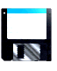
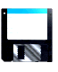

Do you ever find yourself so deeply absorbed in what youre doing that time flies by? Maybe its playing an instrument, reading a thrilling book, or learning a new skill.
For non-ADHDers, this state of flow is an enjoyable or productive way to spend time. However, for those with attention-deficit/hyperactivity disorder (ADHD), periods of hyperfixation can be both a blessing and a curse.
Youll gain deep knowledge and experience in the subject or activity (positive). But youll also find yourself completely disengaged from everything else around you (problem).
ADHD hyperfixation isnt an official symptom of ADHD. In fact, it sounds contradictory to what ADHD is most widely known for inattention and a lack of focus.[1]
As you learn more about this condition, youll discover that ADHD isnt actually an attention-deficit disorder. Its more of an attention-abundance disorder. The challenge lies in learning to regulate and control it.
When this wealth of attention isnt managed well, you can experience whats known as ADHD hyperfixation.
The good news is that you can learn to recognize hyperfixation and find ways to keep it in check!
Hey. You. Over there. Focus. Keep reading...
Why Do People Hyperfixate?
Anyone can experience hyperfixation from time to time.
When youre doing something you really enjoy, its easy to lose track of time and become so engrossed that everything else fades away.
However, research has found that these episodes are more frequent and intense in those with certain traits or conditions.[2]
The following can cause or contribute to hyperfixation:
When youre doing something you really enjoy, its easy to lose track of time and become so engrossed that everything else fades away.
However, research has found that these episodes are more frequent and intense in those with certain traits or conditions.[2]
The following can cause or contribute to hyperfixation:
However, research has found that these episodes are more frequent and intense in those with certain traits or conditions.[2]
The following can cause or contribute to hyperfixation: The following can cause or contribute to hyperfixation: The following can cause or contribute to hyperfixation:
The following can cause or contribute to hyperfixation: The following can cause or contribute to hyperfixation:
ADHD Hyperfixation Vs. Hyperfocus
The terms ADHD hyperfixation and ADHD hyperfocus are often used interchangeably. However, they refer to two distinct phenomena.
ADHD hyperfixation refers to an intense and prolonged state of focus on a particular activity or object. This may lead to happiness, satisfaction, and, at times, increased productivity.
However, if it is not well managed, the person may invest more time and effort than they can afford. They may neglect their personal needs, tasks, and daily responsibilities.
People with ADHD are more likely to experience hyperfixation compared to non-ADHDers.
On the other hand, ADHD hyperfocus refers to being deeply focused on a certain task or activity. Anyone can tap into this flow state. When this happens, they become fully engaged with a task without inner worries, fatigue, or boredom.[2] , [4]
Research also shows that this can increase productivity and is often linked to feelings of accomplishment.[4]
While these two phenomena may be similar in some ways, hyperfixation is fueled by an intense passion or interest in the activity. In contrast, hyperfocus is task-driven and often accompanied by clear goals and a strong sense of direction.
ADHD hyperfixation can be challenging to control and regulate. On the other hand, with hyperfocus, you can deliberately induce a flow state and tap in and out of it as you wish.[4]
Phenomenon... Phenonmenon... pheno-phenonymen... pheno- ... phenomonoen
Is Hyperfixation A Symptom Of ADHD?
Hyperfixation is not an official symptom of ADHD that counts toward a diagnosis. That said, this experience can be associated with ADHD.
Say you get easily hyperfixated and this interferes with your daily life. In this case, its best to get
your symptoms assessed by a mental health professional, as it could be a sign of ADHD or another condition
like autism or OCD.
Say you get easily hyperfixated and this interferes with your daily life. In this case, its best to get
your symptoms assessed by a mental health professional, as it could be a sign of ADHD or another condition
like autism or OCD. Say you get easily hyperfixated and this interferes with your daily life.
Say you get easily distracted Say you get easily distracted Say you get easily distracted Say you get easily distracted
Say you get easily distracted Say you get easily distractedSay you get easily distracted Say you get easily distracted
Say you get easily distracted Say you get easily distracted Say you get easily distracted Say you Say you Say you Say you
Say you Say you Say you Say you Say you Say you Say you Say you Say you
Say you get easily distracted
Say you get easily distracted

The adhd wizard casts
shame upon you
 Got questions? Send me an email at
Got questions? Send me an email at
 Back
Back


 Go
Go


 to reload the page.
to reload the page.

 What is ADHD?
What is ADHD?
 Cameron's World
Cameron's World


 



 Used space:
Used space: